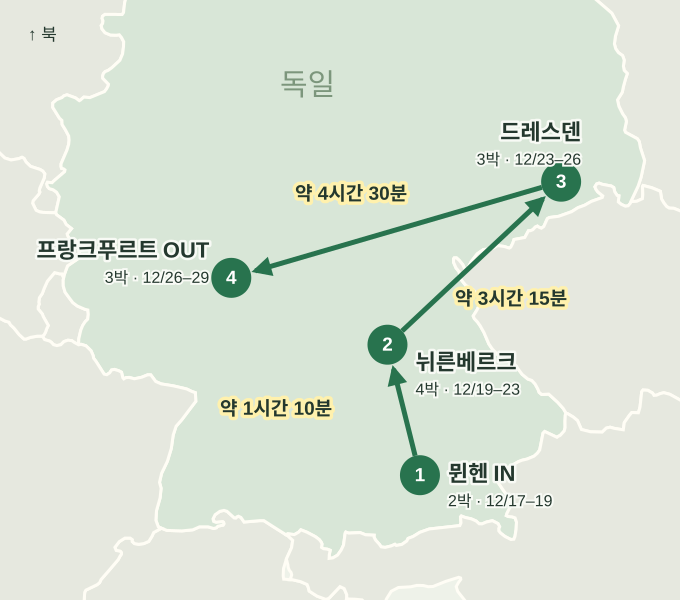

WINTER 2026 · ROUTE V
독일 크리스마스 여행
12/16 한국 출발 · 항공·숙소 미예약
숙박과 이동

| 이동일 | 구간 | 편도 열차 시간 | 환승 |
|---|---|---|---|
| 12/19 | 뮌헨 → 뉘른베르크 | 약 1시간 10분 | 직통 기준 |
| 12/23 | 뉘른베르크 → 드레스덴 | 약 3시간 15분 | 1회 환승 기준 |
| 12/27 | 드레스덴 → 프랑크푸르트 | 약 4시간 30분 | 직통 기준 |
드레스덴 마켓 종료일 슈탈호프 12/23 종료 · 슈트리첼 12/24 종료.
즐길거리
뮌헨
마리엔광장에서 시작하는 뮌헨
신시청사·구시가지·레지덴츠. 저녁은 마켓과 전통 비어홀에서.
바이스부르스트(흰 소시지)와 브레첼, 오바츠다(치즈 스프레드). 든든한 식사는 슈바인스학세(돼지 족발 구이).
뮌헨 관광청뉘른베르크
성 아래 골목과 전통 마켓
카이저부르크·바이스게르버가세·헹커슈테크. 저녁은 전통 마켓, 맥주 저장고 투어도 선택 가능.
드라이 임 베클라(작은 소시지 세 개를 넣은 빵), 엘리젠 렙쿠헨, 쇼이펠레(돼지 어깨 구이).
뉘른베르크 음식 안내프랑크푸르트
구시가지 산책과 편안한 마무리
뢰머광장·대성당·아이제르너 슈테크 산책. 대표 마켓은 종료 후 방문.
그뤼네 조세(허브 소스)·핸드케제(치즈)·아펠바인(사과주)·베트멘헨(마지팬 과자).
프랑크푸르트 음식 안내거점별 근교
이동시간은 예상치이며, 12월 열차편은 아직 확인 전입니다.
| 출발 도시 | 근교 · 국가 | 편도 예상 | 둘러볼 곳 | 음식·음료 | 겨울 방문 참고 |
|---|---|---|---|---|---|
| 뮌헨 | 노이슈반슈타인·호엔슈방가우 / 퓌센 독일 · 성·궁전 | 약 3시간 안팎 · 열차+버스+도보 | 산 위의 성·알프제·퓌센 구시가지 성 내부 투어 + 알프제 포토 산책 | 알고이 케제슈페츨레 · 지역 치즈 면요리 | 하루 전체. 두 성 내부를 모두 보려면 각각 시간 예약. 겨울 길·셔틀 상태 확인. |
| 뮌헨 | 잘츠부르크 오스트리아 · 구시가지·마켓 | 약 1시간 45분~2시간 · 열차 | 구시가지·대성당 마켓·미라벨 주변 전통 카페 + 대성당 마켓 야경 | 보스나 소시지빵 · 모차르트쿠겔 · 노케를 | 하루 전체. 현지 야경까지 본 뒤 귀환 가능. |
| 뮌헨 | 아우크스부르크 독일 · 구시가지·마켓 | 약 30~50분 · 열차 | 시청광장·구시가지·푸거라이 푸거라이 골목과 시청광장 산책 | 슈바벤식 슈페츨레 · 지역 메뉴 | 반나절~하루. 가까운 도시 후보. 내부 시설 시간 확인. |
| 뮌헨 | 헤렌킴제 궁전·킴제 독일 · 성·궁전 | 약 2~2시간 30분 · 열차+선박+도보 | 호수 속 섬의 궁전 배로 섬 입도 + 궁전 내부 투어 | 킴제 생선 요리 · 당일 메뉴 확인 | 겨울 선박 시간표와 궁전 투어 연결이 관건. |
| 뮌헨 | 린더호프 궁전·오버아머가우 독일 · 성·궁전 | 약 2시간 30분~3시간 이상 · 환승 | 궁전·벽화 마을 궁전 내부 투어 + 벽화 마을 산책 | 바이에른식 돼지고기 구이 · 지역 메뉴 | 겨울 대중교통 배차 확인. 렌터카·투어와 비교. 정원 시설은 계절 제한. |
| 뮌헨 | 가르미슈·아이프제·추크슈피체 독일 · 자연 | 가르미슈 약 1시간 30분~2시간 · 산·호수 추가 이동 | 알프스 풍경·호수·전망대 호수 산책 또는 정상 케이블카 중 선택 | 카이저슈마른 · 알프스 지역 디저트 | 하루 전체. 강풍·시야·케이블카 운행 확인 후 결정. |
| 뮌헨 | 테게른제 독일 · 자연 | 약 1~1시간 15분 · 열차 | 호숫가 산책·산 풍경 호숫가 산책 + 브로이슈튀베를 식사 | 테게른제 맥주 · 브레첼 | 반나절~하루. 맑은 날 우선, 유람선은 겨울 시간표 확인. |
| 뮌헨 | 슈타른베르크 호수 독일 · 자연 | 약 30~45분 · 열차 | 호숫가·카페 호숫가 카페에서 쉬기 | 케이크·커피 · 지역 식당 생선 메뉴 | 반나절. 겨울 유람선 운항을 전제로 잡지 않기. |
| 뮌헨 | 슐라이스하임 궁전 독일 · 성·궁전 | 약 45~60분 · S-Bahn+도보 | 바로크 궁전·정원 신궁전 실내 관람 | 브레첼·오바츠다 · 바이에른 지역 메뉴 | 반나절. 내부 휴관일 확인. |
| 뮌헨 | 님펜부르크 궁전 · 시내권 독일 · 성·궁전 | 약 30~45분 · 시내교통 | 넓은 궁전·공원 궁전 내부·마차박물관 중 관심 시설 | 바이스부르스트·브레첼 · 뮌헨 식사와 묶기 | 장거리 근교 대신 선택. 겨울 별궁·공원 시설 개방 확인. |
| 뉘른베르크 | 밤베르크 독일 · 구시가지·마켓 | 약 35~50분 · 열차 | 구시청사·구시가지·맥주 전통 양조장 식사 + 리틀 베네치아 산책 | 라우흐비어 · 밤베르거 츠비벨(속 채운 양파) | 반나절~하루. 거점 저녁 마켓과 병행하기 편함. |
| 뉘른베르크 | 로텐부르크 독일 · 구시가지·마켓 | 약 1시간 30분~2시간 · 환승 · 열차 | 성벽·목조 골목·크리스마스 상점 성벽 걷기 + 크리스마스 상점 둘러보기 | 슈네발렌 · 단단하고 바삭한 튀김 과자 | 하루 전체. 마켓은 12/23까지. |
| 뉘른베르크 | 레겐스부르크 독일 · 구시가지·마켓 | 약 1~1시간 20분 · 열차 | 대성당·돌다리·도나우강 돌다리 걷기 + 강변 소시지 식사 | 부르스트쿠흘 소시지·사워크라우트 | 하루. 마켓별 운영·유료 입장 여부 확인. |
| 뉘른베르크 | 뷔르츠부르크 독일 · 성·궁전 | 약 55분~1시간 15분 · 열차 | 레지덴츠 궁전·옛 마인교 레지덴츠 내부 + 옛 마인교 산책 | 프랑켄 실바너 와인 · 지역 메뉴 | 하루. 실내 궁전 관람과 도시 산책 조합. |
| 뉘른베르크 | 바이로이트 독일 · 문화 | 약 55분~1시간 15분 · 열차 | 변경백 오페라극장·신궁전 변경백 오페라극장 내부 관람 | 프랑켄 브라트부르스트·맥주 · 지역 메뉴 | 하루 또는 반나절. 극장 관람 시간 확인. |
| 뉘른베르크 | 코부르크 독일 · 성·궁전 | 약 1시간 10분~1시간 40분 · 열차 | 구시가지·코부르크 요새 요새 관람 + 마르크트광장 산책 | 코부르거 브라트부르스트 · 판매 확인 | 하루. 요새까지 오르막·겨울 내부 개방 확인. |
| 뉘른베르크 | 안스바흐 독일 · 성·궁전 | 약 30~45분 · 열차 | 레지덴츠·구시가지 레지덴츠 관람 + 궁정정원 산책 | 안스바흐 브라트부르스트 · 판매 확인 | 반나절. 짧은 이동으로 궁전·골목 산책. |
| 뉘른베르크 | 퓌르트·에를랑겐 독일 · 구시가지·마켓 | 퓌르트 약 10~20분 / 에를랑겐 약 20~30분 · 열차 | 이웃 도시 구시가지·카페 작은 구시가지·카페 반나절 | 프랑켄 맥주·소시지 · 지역 메뉴 | 각각 반나절. 멀리 나가기 부담스러운 날. |
| 드레스덴 | 마이센 독일 · 구시가지·마켓 | 약 35~45분 · S-Bahn | 성 언덕·구시가지·도자기 MEISSEN 도자기 제작 시연 또는 성 관람 | 작센 와인 · 카페 케이크(지역 메뉴) | 반나절 코스. 크리스마스 마켓은 12/24까지이며, 26일 겨울마켓과 시설 운영은 확인이 필요합니다. |
| 드레스덴 | 모리츠부르크 독일 · 성·궁전 | 약 45~70분 · 버스 등 | 호수 위 바로크 성 성의 겨울 전시가 열리면 실내 관람 | 작센식 따뜻한 식사·케이크 · 지역 메뉴 | 반나절. 겨울 전시와 12/24–26 개방 확인. |
| 드레스덴 | 피르나 독일 · 구시가지·마켓 | 약 25~40분 · 열차 | 작은 구시가지·엘베강 카날레토가 그린 구시가지 풍경 찾기 | 작센식 아이어셰케 · 지역 디저트 | 반나절. 마켓은 해당 날짜 운영 확인. |
| 드레스덴 | 바스타이·작센 스위스 독일 · 자연 | 약 1시간 30분~2시간 이상 · 열차+버스/도보 | 바위 다리·엘베강 전망 전망대 사진 산책 · 결빙 시 생략 | 따뜻한 수프·케이크 · 산책 후 식사 제안 | 겨울 결빙 시 전망길 접근 제한. 맑고 길 상태 좋은 날만. |
| 드레스덴 | 쾨니히슈타인 요새 독일 · 성·궁전 | 약 1시간 15분~1시간 45분 · 열차+연결 이동 | 절벽 위 요새·전망 요새 전망과 전시 관람 | 지역 식당 수프·구이 · 운영 확인 | 겨울 개방·연결 교통 확인. 마켓 행사는 상설 아님. |
| 드레스덴 | 라이프치히 독일 · 문화 | 약 1시간 10분~1시간 40분 · 열차 | 바흐·교회·아케이드·카페 토마스교회·바흐박물관 중 선택 | 라이프치거 레르헤 · 고제 맥주 | 하루. 성탄 연휴 박물관·공연별 시간 확인. |
| 드레스덴 | 프라하 체코 · 구시가지·마켓 | 약 2시간 15분~2시간 30분 · 열차 | 카를교·구시가광장·마켓 구시가 마켓 + 카를교 야경 | 스비치코바 · 굴라시 · 체코 맥주 | 하루 전체. 12/26 마켓 운영 기간, 왕복 장거리 부담 있음. |
| 드레스덴 | 카를로비바리 체코 · 온천 | 버스 약 3시간 이상 · 실제 연결 확인 | 온천 회랑·구시가지 온천 회랑 산책 + 예약한 스파 | 온천 웨이퍼 · 베헤로프카 | 장거리 후보. 왕복 6시간 이상이라 숙박 여행과도 비교. |
| 드레스덴 | 체스키크룸로프 체코 · 장거리 | 당일 왕복 부적합 · 실제 연결 미조회 | 성·중세 구시가지 구시가지 전망·성 외관 산책 | 체코식 구이·크네들리키 · 지역 메뉴 | 당일 왕복 비추천 · 숙박 경로 변경 필요. |
| 프랑크푸르트 | 쾰른 독일 · 구시가지·마켓 | 약 1시간 10분~1시간 30분 · ICE | 대성당·라인강·호이마르크트 대성당 내부 + 브로이하우스 + 겨울마켓 | 쾰쉬 · 할버 한(치즈빵) · 히멜 운 애드 | 12/28 선택 가능. 대성당 앞 마켓 종료, 호이마르크트 운영. |
| 프랑크푸르트 | 하이델베르크 독일 · 성·궁전 | 약 1~1시간 30분 · 열차 | 성·옛 다리·구시가지 옛 다리 사진 + 성 관람 | 슈투덴텐쿠스 초콜릿 | 하루. 마켓보다 풍경·도시 산책 목적. |
| 프랑크푸르트 | 마인츠 독일 · 구시가지·마켓 | 약 30~45분 · 열차 | 대성당·구시가지·라인강 대성당·구시가지 산책 + 와인바 | 슈푼데케스 · 라인헤센 와인 | 반나절. 12/27–29 마켓 운영을 전제로 잡지 않기. |
| 프랑크푸르트 | 비스바덴 독일 · 온천 | 약 40~55분 · 열차 | 쿠어하우스·도시 산책·온천 온천 휴식 또는 쿠어하우스 주변 산책 | 라인가우 와인 · 카페 케이크 | 반나절~하루. 온천 휴일 영업·예약 확인. |
| 프랑크푸르트 | 뤼데스하임 독일 · 구시가지·마켓 | 약 1시간 10분~1시간 30분 · 열차 | 드로셀 골목·라인강 풍경 드로셀 골목 + 음악박물관 등 개방 시설 | 뤼데스하이머 커피 · 리슬링 | 겨울 케이블카·유람선 운항 확인. 마켓 종료 후 방문 시기. |
| 프랑크푸르트 | 코블렌츠 독일 · 성·궁전 | 약 1시간 30분~2시간 · 열차 | 독일의 모퉁이·강변·요새 두 강 합류점 + 요새 전망 | 모젤·라인 리슬링 · 지역 식사 | 하루 전체. 요새·케이블카 겨울 운영 확인. |
| 프랑크푸르트 | 스트라스부르·콜마르 프랑스 · 장거리 | 프랑스: 스트라스부르 약 2시간 / 콜마르 약 2시간 45분~3시간 이상 | 알자스 구시가지·목조 건물 스트라스부르: 대성당·프티트프랑스 / 콜마르: 프티트브니즈 | 타르트 플랑베 · 슈크루트 · 쿠글로프 | 두 도시 하루 방문 비추천 · 마켓 종료일 확인. |
크리스마스 마켓 일정
| 마켓 | 2026 운영 일정 | 숙박 기간과 비교 |
|---|---|---|
| 뮌헨 마리엔광장 | 11/20–12/24 | 뮌헨 숙박 기간 운영 |
| 뉘른베르크 | 11/27–12/24 · 24일 14시 종료 | 뉘른베르크 숙박 기간 운영 |
| 로텐부르크 | 11/20–12/23 | 선택 시 12/23 이전 |
| 드레스덴 슈트리첼 | 11/25–12/24 | 12/23 도착 · 다음 날 종료 · 24일 마감 시각 확인 |
| 드레스덴 슈탈호프 | 11/25–12/23 · 11:00–21:30 겨울행사 12/27–30 재개 | 12/23 도착일 종료 · 12/24–26 휴무 |
| 프랑크푸르트 대표 마켓 | 11/23–12/22 | 방문 시 종료 · 시내 관광 위주 |
| 쾰른 호이마르크트 | 11/23–2027/1/10 · 12/24·25 휴무 | 프랑크푸르트 숙박 기간 운영 |
| 프라하 구시가·바츨라프광장 | 11/28–2027/1/6 | 드레스덴 숙박 기간 운영 |
| 잘츠부르크 대성당 마켓 | 11/19–2027/1/1 | 뮌헨 숙박 기간 운영 |
숙소와 밤길
| 도시 | 주의할 구간 | 숙소 추천 위치 | 이동 방법 |
|---|---|---|---|
| 프랑크푸르트 | Taunusstraße·Elbestraße 일대 Niddastraße·북쪽 Moselstraße 주변 블록 | Hauptwache·Dom/Römer 주변 중앙역 바로 앞보다 관광 중심부부터 비교 | 중앙역에서 S-Bahn으로 Hauptwache 이동 후 숙소 접근, 또는 공식 택시. 해당 골목을 관통하는 도보 최단경로 제외. |
| 뉘른베르크 | Frauentormauer 성매매 구간 Otto-/Färberstraße 부근 현장 표지 확인 | Lorenzkirche·Hauptmarkt·Königstraße 축 | 중앙역 → Königstor → Königstraße → 구시가지. 남서쪽 성벽 골목으로 우회하는 숙소 동선은 피함. |
| 뮌헨 | 중앙역 남쪽 Schillerstraße·Adolf-Kolping-Straße 일대 Alter Botanischer Garten·Nußbaumpark 밤길 | Marienplatz·Odeonsplatz·Isartor 주변 | 중앙역 → S-Bahn/U-Bahn → 숙소 인근역. 공원 지름길·역 뒤 골목보다 정면 상업가와 대중교통. |
| 드레스덴 | Wiener Platz·Prager Straße Postplatz·Marienstraße 밤길도 최근 상황 확인 | Neumarkt·Frauenkirche 주변 12/23 마켓에서 숙소까지 짧은 동선 | 중앙역에서 트램 또는 공식 택시로 숙소 가까이 이동. 밤에 광장·공원을 거치는 지름길은 제외. |